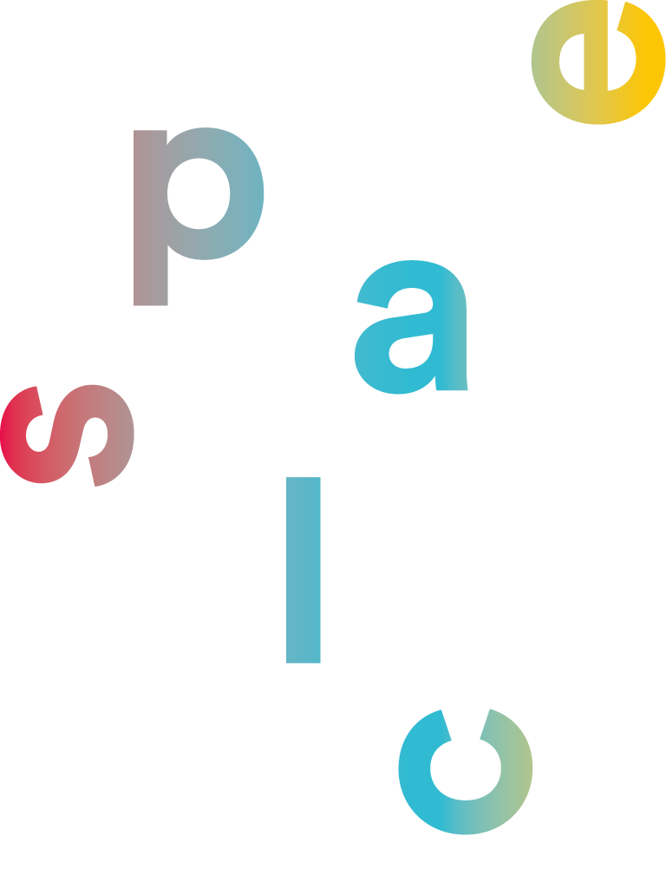

splace – das digitale Magazin der Kunstuni Linz / the digital magazine of the University of Art and Design Linz
Download Pressematerial
Presse Material als ZIP downloaden
Pressematerial einzeln (PDF)
PDF_Dokument: Pressefolder (DE)
PDF_Dokument: Beschreibung der Ausstellungsobjekte (DE)
PDF-Dokument: splace2 Termine (DE)
Pressematerial einzeln (TIFF-Bilder)
splace magazine (diverse Ansichten) 28MB
Splace Team
Ausstellungsansichten (Print- und Webauflösung) 221MB
